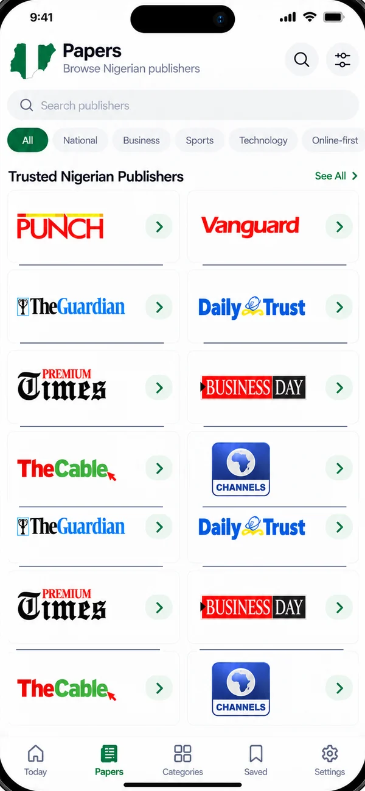
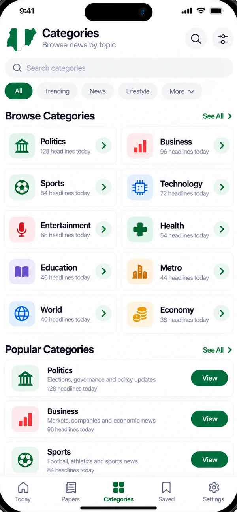
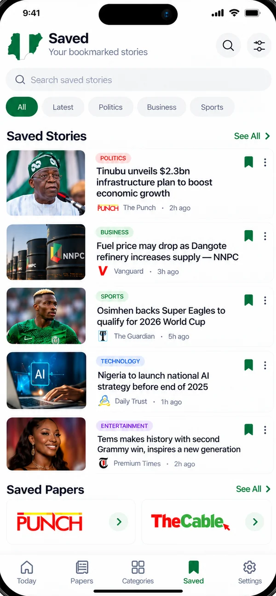
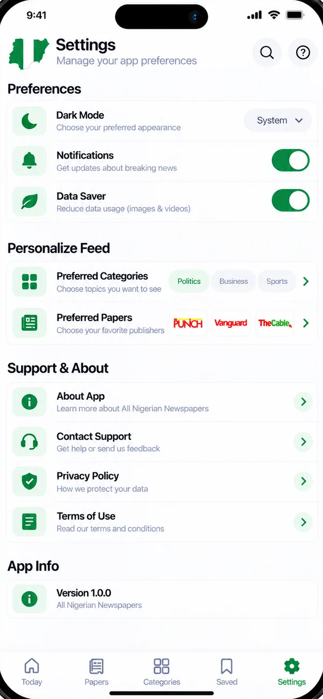

All Nigerian newspapers in one app
Read today's headlines from Punch, Vanguard, Daily Trust, The Sun, Premium Times and 100 Nigerian newspapers in one place. See every publisher that reported a story, then read it at the source.
- Free, no sign-up
- Original sources
- Offline & Data Saver
Headlines from Nigeria's leading newspapers and news sites
Everything you want from a Nigerian news app
One place for the day's news, without opening ten websites or losing track of who reported what.
100 newspapers, one feed
National dailies, business, sports, tech and online news sites, refreshed through the day.
One story, many perspectives
Stories covered by several papers are grouped, with every publisher listed, so you can compare.
Always the original source
Every headline shows its publisher, and Read on opens the full article on their website.
11 news topics
Politics, business, economy, sports, entertainment, tech, health, education and more.
Save & read offline
Bookmark stories and papers, and browse loaded headlines even without a connection.
Light on data
Data Saver skips list images, and the app only fetches feeds that have new stories.
See who reported it, and how
When Punch, Vanguard, Channels TV and Daily Trust all cover the same event, you see one story with every publisher listed, not four duplicates.
- "Reported by 6 publishers" shows how widely a story is covered.
- Read on Punch, Read on Vanguard: open any publisher's version in one tap.
- Related coverage keeps follow-up stories one scroll away.

Browse 100 Nigerian newspapers
Open any newspaper's latest headlines, save your favourite papers, or follow a topic across all of them.
See all 100 newspapersUp to date in three taps
Install free
Get All Nigerian Newspapers from Google Play. No account, no sign-up, no subscription.
Pick your topics & papers
Choose the topics and newspapers you care about. Your Today feed puts them first.
Read, compare, save
Open a story, see every publisher that reported it, and read at the source. Save it for later.
Designed for fast, clear reading



Your favourite papers, side by side
Follow the most-read Nigerian newspapers in one place.
Questions, answered
Is All Nigerian Newspapers free?
Yes. The app is free to download and use, with no subscription and no account. It is supported by ads.
Which newspapers are included?
The app's directory lists 100 Nigerian newspapers and news websites, including Punch, Vanguard, Daily Trust, The Sun, ThisDay, Premium Times, Sahara Reporters, Channels TV, Tribune, Leadership, Daily Post and BusinessDay. See the full list of Nigerian newspapers.
Can I read full articles in the app?
The app shows each headline with a short preview and the publisher's name. Tap Read on to open the full article on the original newspaper's website, inside the app.
What does "Reported by N publishers" mean?
When several newspapers cover the same event, the app groups their reports into one story, so you can compare how Punch, Vanguard, Daily Trust and others reported it and choose where to read.
Does it work offline?
Headlines you have loaded stay on your phone, so you can browse them and your saved stories without a connection. Full articles open on publisher websites and need internet.
Is the app affiliated with the newspapers?
No. All Nigerian Newspapers is an independent news aggregator by Emerging Technologies. Headlines, logos and articles belong to their publishers, and every story links to the original source.
All Nigerian newspapers. One free app.
Install All Nigerian Newspapers and get today's headlines from 100 Nigerian publishers, with the original source on every story.